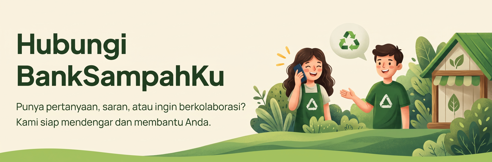
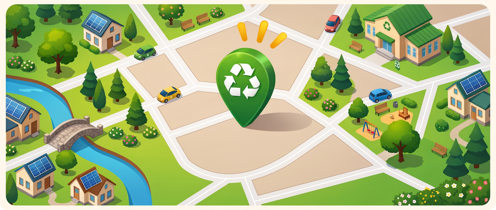
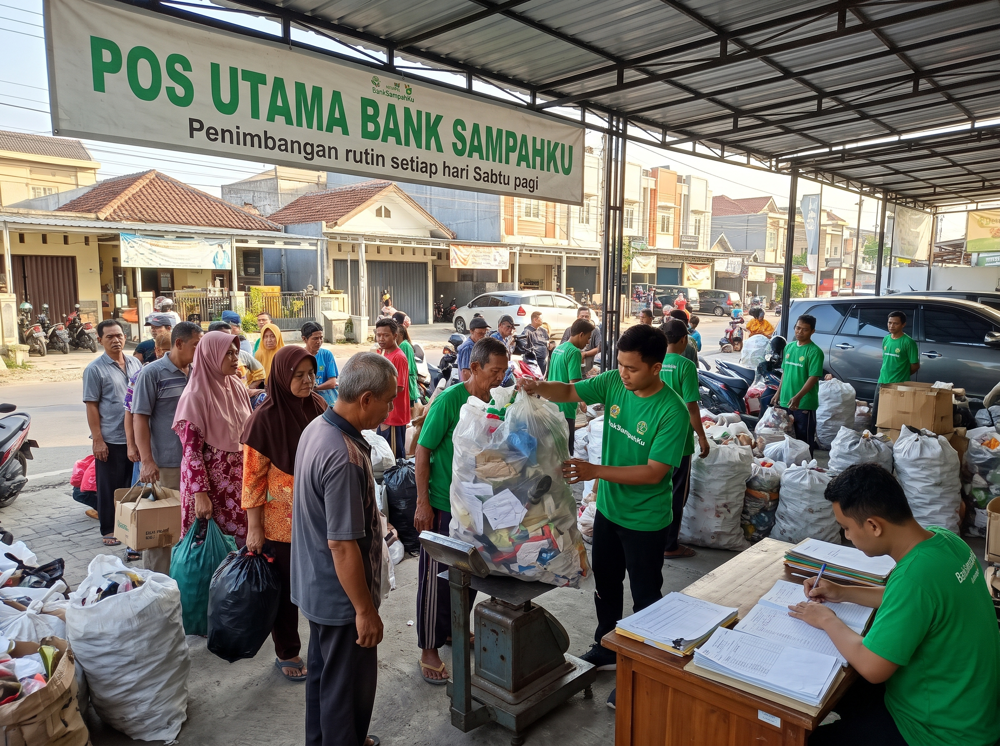

Jam Operasional
| Hari | Jam Buka |
|---|---|
| Senin – Jumat | 08.00 – 16.00 WITA |
| Sabtu | 08.00 – 13.00 WITA |
| Minggu & Libur | Tutup |
Kirim Pesan kepada Kami
Sampaikan pertanyaan, masukan, atau kerja sama melalui formulir berikut.

Peta Lokasi BankSampahKuGaleri Kegiatan BankSampahKu
Dokumentasi aktivitas penimbangan, pemilahan sampah anorganik, dan edukasi warga.
